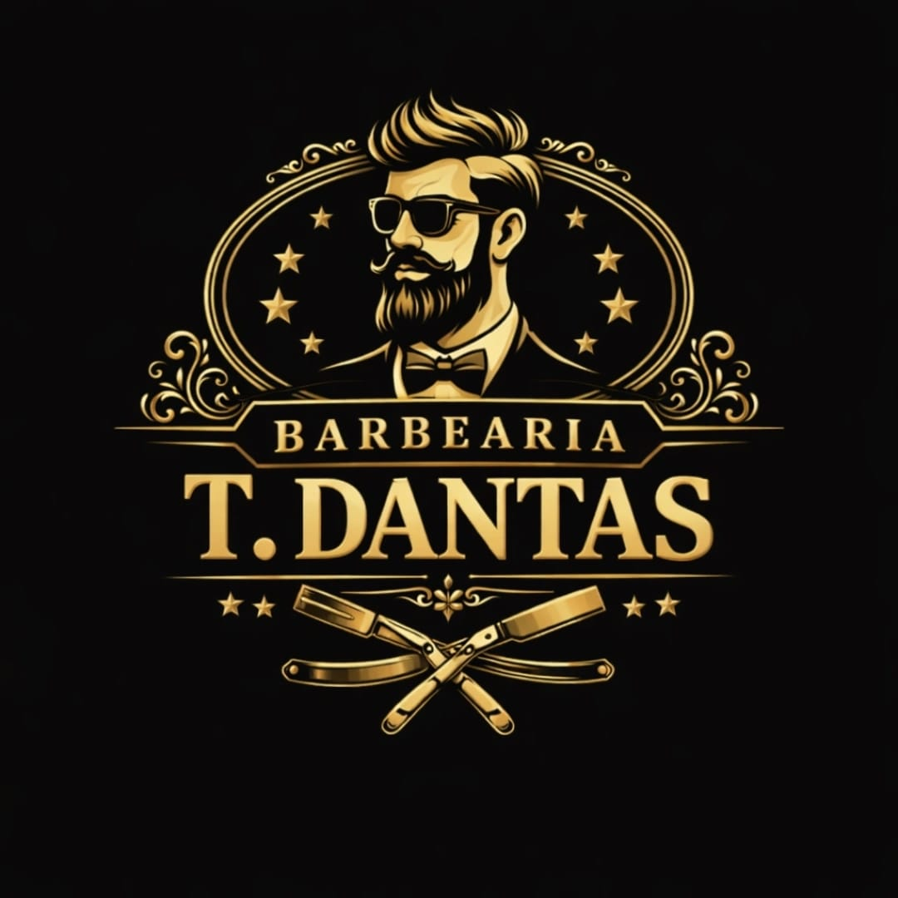

Visagismo
Leitura de rosto, proporção e personalidade para orientar a imagem com mais coerência.

T. Dantas Visagismo e Barbearia Agendar no WhatsAppVisagismo, precisão e presença
Aqui o foco é construir imagem com leitura de rosto, proporção e estilo. O corte e a barba entram como suporte para um resultado mais elegante, coerente e natural.
Serviços
Leitura de rosto, proporção e personalidade para orientar a imagem com mais coerência.
Estrutura limpa e bem executada para sustentar o desenho definido pelo visagismo.
Acabamento preciso para reforçar linhas, harmonia e presença sem pesar o visual.
Portfólio
O foco sai do corte isolado e passa a ser a imagem como um todo.
Localização
Estr. do Campinho, 990 - Campo Grande, Rio de Janeiro - RJ, 23070-220
Contato
Clique no botão abaixo para enviar uma mensagem rápida no WhatsApp e garantir seu horário com atendimento direto e objetivo.